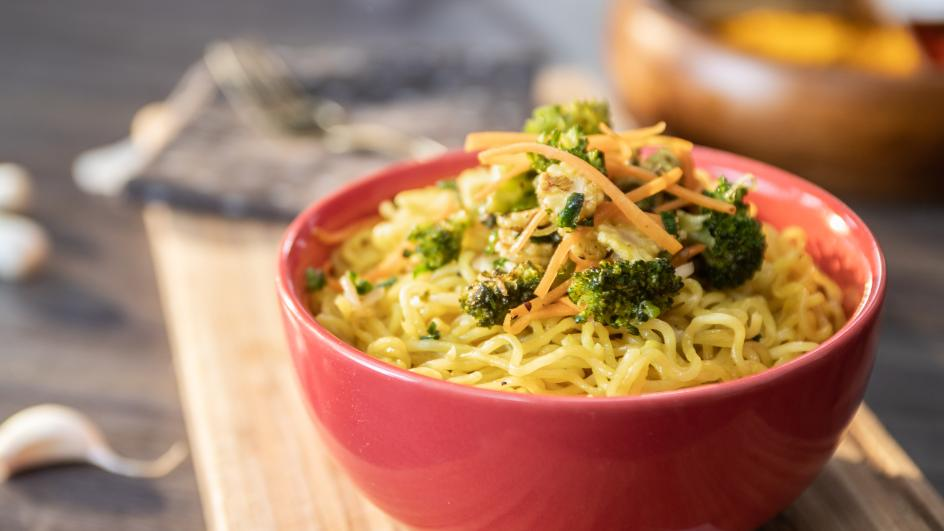

Home
Maggi

Description about the recipe
Nothing makes a Desi kid more nostalgic than a bowl of maggi. While traditionally it’s simply made with the spice packet that comes along with it and some veggies, I created this super-spicy elevated version that I know you’ll love. You’ll never want to eat maggi the regular way again!
Ingredients
- Noodles
- Taste maker
- Oil
- Ketchup
- Pepper
- Salt
- Vinegar
Steps
- Heat up oil in a sauce pan on medium heat and add in your chopped yellow onions. Sauté until translucent.
- Add in all of your desired veggies such as corn, peas, and green cabbage, and sauté for a couple of minutes until tender.
- In a bowl, mix together your ketchup, soy sauce, rice vinegar, sriracha, sambal, kashmiri mirch, salt, garam masala, cumin, and garlic powder.
- Add your sauce mixture to your onions and cook for a couple of minutes on a low medium heat.
- Add in your water and ramen/maggi noodles and cook until the ramen is fully cooked through.
- Garnish with green onions.